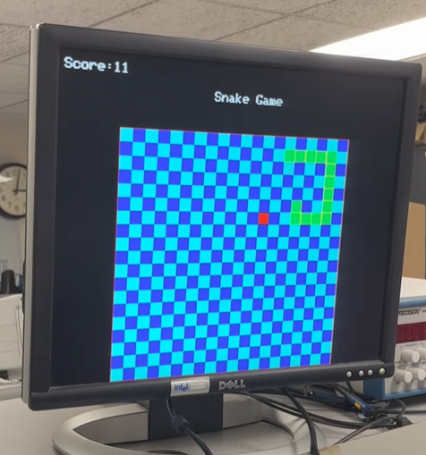
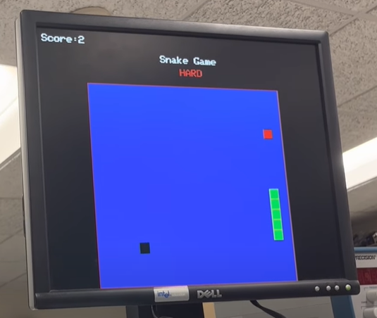
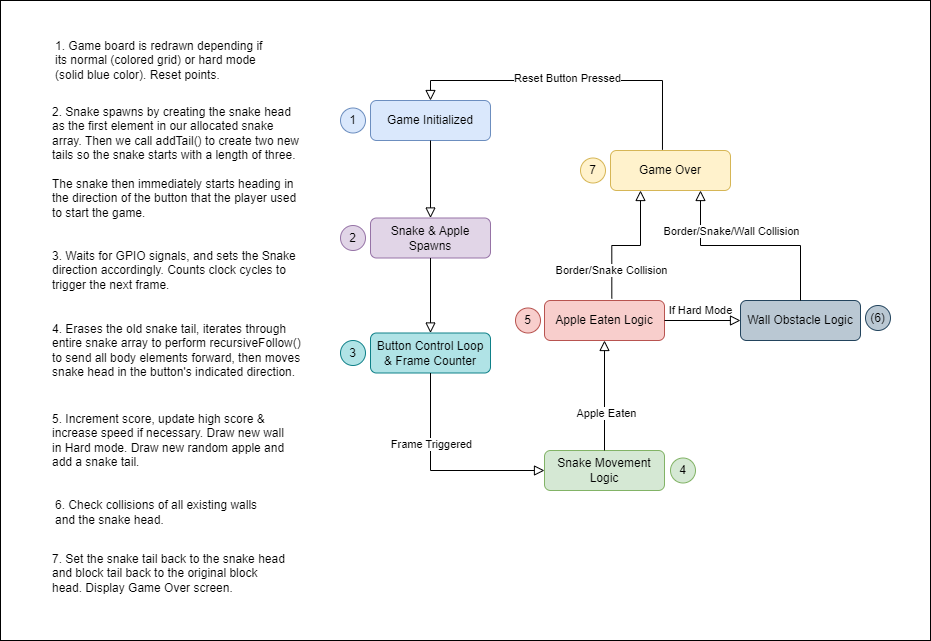
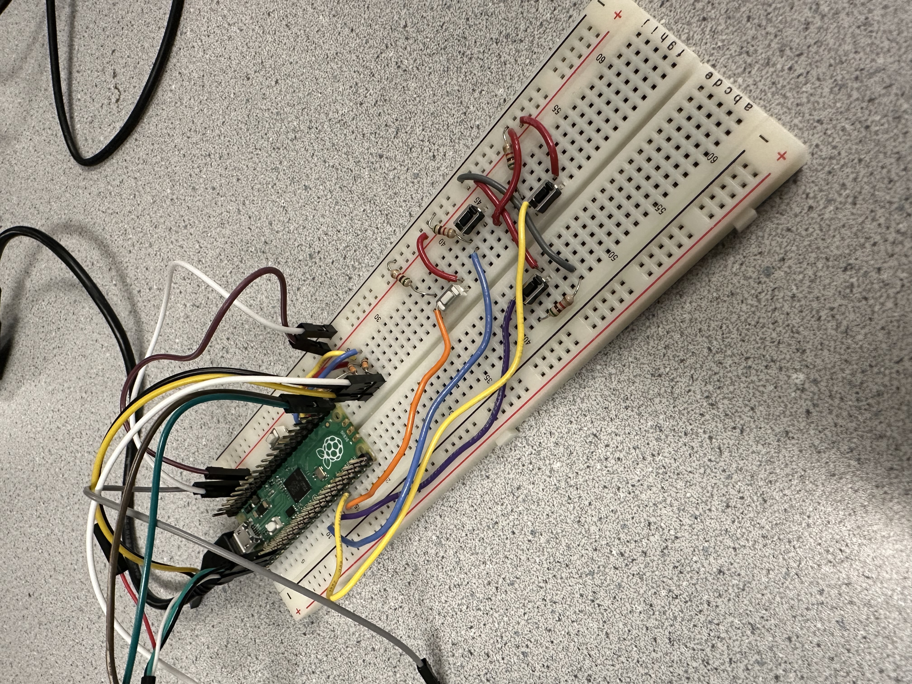
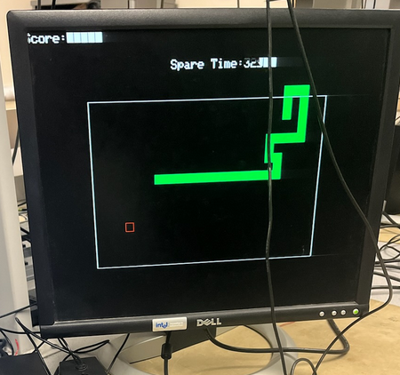
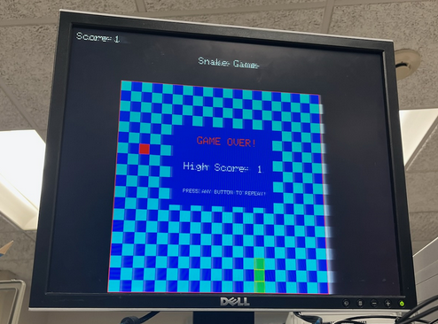
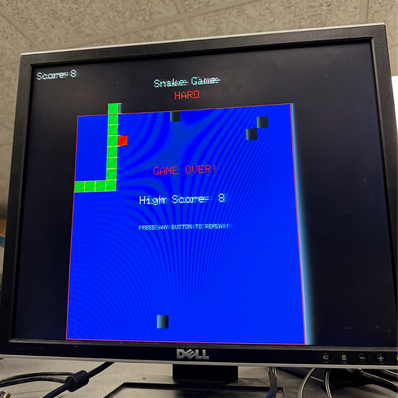

Retro Snake Game
A VGA retro-style snake game programmed in C for the RP2040

For our final project, we built a Snake-inspired game run through the RP2040 and connected to a VGA display. The game has a hard mode and stores user high scores for a play session.
Our version of the Snake Game closely follows classical versions in which the player starts off with a snake that can move around on a grid using button controls, and eating an apple will grow the snake's lengths, but crashing into the rest of the snake body or board’s walls will end the game. We designed our iteration to include a hard mode and stores the user’s high scores during the play session. Leading up to the final project, we knew we wanted to develop a type of arcade game, since they tend to be a great way to both test and develop ones’ skills when learning a new language or technology. Games development requires us to focus and learn about several different categories of development and engineering. Just on the software side, we not only had to think about the software and data structures underlying the game, but also, had to think about optimization as well as game logic. Hardware of course was important, we had to assess the best way to display information to the user, and take in information from the user. We also had to think about more subjective things like how “fun” a game is, or how the game should feel. We had to make considerations of game design and making a product that isn’t just technically sound, but also engaging for users. We picked Snake specifically since it is a game that has a lot of different metrics for success, as well as tangible checkpoints for our development. There were always more quality of life features and inspirations to add, but also good points to aim towards or stop at if development went better or worse than expected.
High Level Design
As we said earlier, we thought it would be interesting and pedagogically effective to work on a game for our final project. We elected to do Snake for a variety of reasons, but mostly due to the capacity for interesting software opportunities and a good affinity the game had with the medium it would be played on. We knew we were going to be using the VGA display and that the button array we would use would have to be relatively simple since there are only a limited number of GPIO pins on the Raspberry Pi Pico. The VGA pushed us toward more retro style games since they would look most fitting on an older, less advanced display. The button array didn’t actually limit us too much once we agreed to a retro game, but Snake was a good game we had all played that used only 4 buttons, which was perfect for our design. Another reason we picked Snake was that there was a lot of capacity for different game modes and things to add that could improve the game and provide more things to keep trying to add and work on.
There weren't many advanced calculations to do actually for the purposes of this project. One thing somewhat math related we had to implement was collision detection. We wanted to make it as efficient as possible since collision detection is often a big performance sink in modern video games. To combat this, we elected to use a simple grid system to hold and set the position of each wall, snake segment, apple, and block element in the game. The grid system would be used when handling any of the game logic and would allow the game to be easily configured to be smaller, larger, or have more maneuverability. Once it came to displaying the items, we would extrapolate the grid position into a position on the actual display based on the size of the game area we decided on. This meant that any collision would just be a comparison of two position variables of type short per item. It also helped that by the mechanics of the game, any place a segment of the snake goes, the head of the snake had to go first. Using this, we would only ever have to detect collisions for the head, rather than the rest of the body, and save quite a bit of performance.
The code behind the game makes a lot of use of C structs to track the positions of and perform the interactions between the different objects in the game. Each segment of the snake was an instance of a struct of type snake_t, the apple an instance of type apple_t, and the blocks for hard mode an instance of type block_t. Snake_t instances are quite similar to nodes in a linked list in that they link to the two snake_t instances that touch the snake segment on either end. Aside from this, they hold the direction the specific segment is heading and the position of the segment. This node-like structure allowed for some very intuitive code when it came to having the snake move in a direction or detecting collision that the snake had with itself. To implement game logic, we started with a recursive function that would go through the links in the nodes in reverse order, so we would start at the tail node and compare fields accordingly to make it take on the same fields as its preceding node.
Hard Mode Gameplay
Logical Structure
Our program utilized a single PT thread on the Pico, that takes care of all GPIO user inputs and game logic. We believed that a secondary user input thread was not necessary because the frequency of button presses would not be substantial enough to delay the rest of our program, thus we found it easier to incorporate button presses with the rest of the logic and not have to rely on interrupts when a button, we would instead simply change the heading direction of the snake and also be able to more easily use button presses to initialize or reset the game. Our display logic, including the game board and game score also all runs on the same thread, only updating the pixels when a function is called or during every frame, rather than updating every cycle, in order to reduce flickering and improve smoothness. Most of our code’s complexity comes from our game logic and implementation of rule sets, in which the sequential order of functions and monitoring the snake head’s location is imperative.
Game Logic
As we were wrapping up the main functionality of our Snake game, we also wanted to add extra features to improve the user experience, such as maintaining a high score, increasing the snake’s speed over time, adding a Hard mode, and finally adding sound effects to in-game events and possibly having a brief death animation for the snake.
To implement the Hard mode, we decided to change two major things: remove the grid visuals and make the board a solid color to make it trickier to navigate and spawn walls in the middle of the board that would kill the snake if it collided. The main challenge of Hard mode was spawning the wall elements, giving them random locations (instead of selected predetermined ones in an array) and clearing them properly to prevent the snake from dying to “ghost” obstacles. As mentioned in our high-level description, we treated these wall objects as a mix between our snake and apple implementation, in which we allocated an array of size 40 in memory for the expected max number of obstacles a typical player may reach, and added walls to the array as tails in the linked list, just like the snake. However, we also had to spawn these wall objects just like we spawned apples, so we had to generate random positions on the grid for them and spawn them every 2 apples. Then we utilized the same strategy as our snake body collision detection to iterate through the list of wall objects and see if the snake head ever collided with them. A tricky part of initializing the different wall/barrier elements was making sure that once we reset the game and ran through the PT thread again, the old walls would no longer be on the board and would not interfere with the snake’s hitbox. This was an important step and was handled similarly to how we reset the snake’s length at the beginning of every round since the walls also had their own pre-allocated array. In order to accomplish resetting, while the snake is being initialized, we would also always set the first element in the block array as the head and tail of the linked list, and then set its position to be outside of the game board to ensure it would never accidentally collide with the snake, then we would also keep an unmodified pointer to the original head of the wall array so that we would detach the rest of the wall nodes in the old array in case the game resets.
One of the software issues that did come with this however, was that the memory for each node had to be preallocated. If we tried to create a new node for each segment of the snake once an apple was eaten, the nodes would get deallocated and would cease to exist for more than a frame. We also didn’t want to go through and allocated each 400 possible segments individually, so what we ended up doing was allocating an array of 400 snake segments before the main game loop. These segments would all have NULL values and not be linked. We would store an index for the array, and once an apple was eaten, link the segment we are up to to the rest of the snake and set it as the new tail. This meant that when it came to memory, the snake was an array and when it came to actual game logic, the snake was a linked list. Unfortunately, this did mean we used much more memory than would realistically be used in a game, but we wanted to be safe when setting the upper limit for snake segments.
In terms of software tradeoffs, we did have to stick with 3-bit color for the VGA. We wanted to integrate more colors into the game, but unfortunately were unable to due to time and performance constraints. One of the benefits, however, of sticking with just the 8 colors we did have, was that it allowed us to replicate the feel of old games quite well, which did make the game feel more retro and closer to our inspiration. Additionally, if time permitted, we considered implementing a change within the fillRect() function provided to us in String.h so that we could utilize memcpy() in order to draw rectangles faster on the screen and optimize our graphics.
Fortunately, since we weren’t capitalizing from the game or monetizing at all, we didn’t really have to deal with any copyright or trademark issues.
Program/Hardware Design
Hardware:
For our hardware, we did not have any complicated connections or pin layouts, and we were able to reuse most of the hardware we had implemented from previous labs, as well as four push buttons for the actual gameplay. Originally our hardware design included the use of large colorful arcade-style buttons or potentially using a joystick to move the snake, however these materials did not arrive in time for our project.
Snake Game Circuit Board
Our VGA display connection is operated with three inputs: HSYNC, VSYNC, red, green, blue. We used GPIO pins 18, 19, and 20 connected each with a 330 ohm resistor to the proper color ports for the RGB components of the VGA, shown in Figure 1. Pin 16 was used as the HSYNC, which tells the display when to move to a new row of pixels. Pin 17 was used for VSYNC, which tells the display when to start a new frame. The wiring of this can be seen in Figure 1. Additionally regarding the VGA, we utilized three PIO blocks on the RP2040, using the separated state machine and processing capabilities to drive high bandwidth communication and high speed digital interface to the VGA without costing CPU computation cycles. The PIO works by executing sequential Assembly programs and instructions, with the ability to manipulate GPIOs and transfer data by communicating with interrupts and FIFO’s using its 32-bit shift registers. PIO has 9 different Assembly instructions, and the advantage of the state machine is that it is guaranteed to fetch and execute each instruction in one cycle. These capabilities ultimately allow us to use 3 separate PIO programs to generate the two timing signals, HSYNC and VSYNC, as well as the combined RGB signals so that we could offload the work needed to display images on the screen from the Pico’s CPU and save clock cycles and thus allow us to simulate more snake elements if necessary.
The four buttons were simple GPIO inputs, with two possible states: high or low. We used GPIO pins 8,
9, 10, and 11 to connect these buttons on the board with the Pico. As with most buttons, these ones
just had their first notch connected through a 5K resistor to ground, and the second notch connected
to the voltage. We tried our best to keep them in their relative directions to one another, but
ideally we would have had nicer arcade buttons to make our user interface better.
.PNG)
Circuit Diagram of RP2040 Pico
Program:
In order to implement our program and logic structure, detailed earlier, we designed several functions to perform specific tasks or control and meet conditions that were met, such as moving the snake or colliding with objects. When we first created the snake struct and tried to create a linked list of these snake nodes, we didn’t realize that adding a tail to this linked list wasn’t as simple as just adding a new node; we were allocating space in memory. Due to this, our game kept crashing pretty immediately. We thought about fixing the issue by using malloc and free whenever we added or removed a tail, but ultimately decided that having a fixed amount of nodes allocated in the array at the beginning of the file would work best. Doing this allowed us to avoid the complications of dynamically allocating space, and whenever we needed to add onto our snake, we just referenced the next available index in this array.
One of the core functions we implemented was addTail(), which once we fixed the allocation issue, was quite simple. We just had to return a pointer to an already allocated piece of memory. Then, we had to switch the pointer from pointing to the old tail to the new tail. Aside from that, we copied over values of position and direction for the old tail to the new tail so it would appear in the correct position and head in the correct direction and follow the old tail. Our next task was coding recursiveFollow(), which was tricky because we had to do extensive testing to understand if iterating through the list normally or reversely would be most effective. In order to consistently display the correct snake movement behavior, we decided to perform a reverse recursive parse through our linked list, so that the current node would take on all the characteristics and fields of its predecessor every frame to smoothly animate the snake’s movement.
For drawing the snake and apple, we had drawSnake and drawApple function, two different functions because we had to design the apple and snake as two different structs. These functions took in a bool called “erase” that would determine whether or not the snake or apple was being drawn or erased. For drawing the snake, it was called after the x and y positions were updated, and it would draw a green head at the new x and y coordinates. If the erase was true, then the tail of the snake was to be drawn over. It would either be drawn over in light blue or dark blue, or just dark blue if the game was in hard mode. Determining whether or not a square was a light blue or dark blue square was a matter of calculating whether or not the x and y values were even or odd squares on the grid.
The drawApple function worked similar to the drawSnake function, but it was called once at the start of the game to draw an apple (“erase” set to false), or whenever an apple was eaten and needed to be redrawn at a new randomized position.
Another important feature in our game was our game_start and game_over boolean values. Both are initialized to false, and our program enters the main thread. Within the main thread, one of the first functions called is GameStart(), which prevents any logic from running so long as game_start is false. Within GameStart(), the game_start bool is only set to true when a button is pressed, and it is specifically set to hard mode when the up button is pressed. Pressing any button within this function also causes the game_over bool to be set to false.
The game_over bool is also very important to resetting our game properly. There are only two scenarios where game_over is set to true: when the snake collides with itself or a wall. Once game_over is set to false, there is a condition at the end of our thread that will set game_start back to false, and therefore causes the game to get caught in the GameStart() function again in the next cycle.
The final task we set out to complete for this project was to implement sound effects into the game, including a chomp sound when an apple was eaten and an end-game tune once you crashed. Due to time constraints we were unable to complete all the necessary components of the sound generation to run, however, we made significant progress in both the hardware and software implementation. Briefly, we connected a MCP4822 Digital-to-Analog Converter (DAC) to the Pico’s GPIO ports, with a max data rate of 20 MHz, to convert digital sound bytes into analog audio signals. These DAC analog signals were outputted through the DAC’s VOUTA and VOUTB pins were communicated via an SPI channel to the RP2040, in which we set up dual-channel speakers to output the sound. In order to implement the software portion, we followed most of the same strategy we used in Lab 1 for cricket chirps, and designed a timer ISR on that would be constantly entered every cycle, but would only play sound if our CHOMP_STATE flag was set when an apple was eaten. This would trigger our DAC which would send the audio-bytes to the SPI to the speakers every clock cycle until the array of audio-bytes was finished, then clear CHOMP_STATE. We planned to have an identical approach for triggering the end-game sound effect, but we were unable to successfully get the chomp sound to output to the speakers. In order to get the audio-byte arrays, we used MATLAB to read and convert the .mp3 files into audio arrays that could be sent to the DAC. Then we saved each of the audio arrays in an Audio.h header file, and defined the size of the arrays as well as rescaled the audio level values to a max of 4095 to be correctly processed by the DAC. A potential issue with our implementation that prevented us from achieving sound output was that if the SPI channel was being triggered every clock cycle, it's possible the audio frequencies were too short to be heard, thus requiring a small tweak to our software in the future.
Results
The two main results we have to focus on are the performance and the usability. Since we are making a game that deals mostly with human interactions with buttons, there wasn’t much safety or high accuracy to worry about. We also didn’t really have to deal with data for testing or scopes and waveforms. The speed or performance was luckily not an issue for us. Since snake is a fairly light game, and we were careful to make our collision and positioning of elements quite simple, we usually had a lot of performance left on the table. In fact, we would increase the speed of the game and retain the same frame rate if a player started getting a lot of points. In terms of usability, we had some simple buttons that we used for user input. We had planned on having some much nicer and better looking buttons to make the game feel better to play, but unfortunately, they did not come in.
Getting the snake tail to be properly added to the end of the snake and the subsequently following the snake head and erasing properly was an issue we had to tackle, but we were able to so by altering our C structs. Additionally, our whole reset functionality for the game was one of the more time consuming tasks, having to clear the whole board and respawning the snake in either a random position or always spawning in the same starting location, and then detaching the old tails from the new, respawned snake. Getting the snake to perfectly respawn with the original body length of 3 was very tricky. Some of our attempted solutions resulted in a single head being respawned but as it moved, the previous location would not be erased, so it became an infinitly long snake. Other solutions resulted in us not being able to reset the snake perfeclty, and instead you would keep the same length as your previous life, which wasn't great, but at least it was drawing visually to the screen correctly and setting the snake and all if its existing tales to correct location. Eventually, we came upon the final solution which was simple a one-liner that set the snake tail back to the snake head, effectively cutting our length down to 1 and delinking the rest of the snake elements, then adding two tails at the very beginning to get back to a length of 3. This process was tedious, but definitely very helpful in debugging and brainstorming new solutions that may or may not work.
Early version, black background and before we implemented erasing old tail elements
Core version of our final game
End Game screen for our Hard mode with obstacles
Conclusions
The results mostly met our expectations, but we had some extra features we were really hoping to implement that we did not get to implement. For one, we really wanted to integrate sound and more colors into the game. We lost a lot of time trying to fix pointer issues we had with allocating the nodes of the snake and so unfortunately, did not get to finish implementing those features. Next time, we would definitely be more careful and be wary of the bugs that arise with not preallocating memory. The only code we really reused was the code from the prior projects that we worked on and so not much IP concerns. We didn’t have to deal with any non-disclosure agreements either. We were reverse-engineering a pre-existing game for the project, but we didn’t worry too much about the specifics of classic snake, and decided to use it as an inspiration rather than a strict guide.
In the future, we would like to do the final steps to implement sound effects as well as adding new, intriguing game modes to keep the player engaged. We also wanted to add more visuals, such as a quick death animation for the snake, or a colorful power-up animation whenever an apple was eaten. More computational and graphical optimization would also be something to look into, especially because we ended up using only one PT thread and we do a lot of rectangle drawing, so we could have tried to implement that cpymemory trick.
Appendices:
The group approves this report for inclusion on the course website.
The group approves the video for inclusion on the course youtube channel.
- Juliet handled the user interaction when it came to buttons and also worked on the game logic.
- Omar handled the main game logic and the underlying structure like the structs and memory allocation.
- Pietro handled the VGA interaction and the reset and hard mode code.